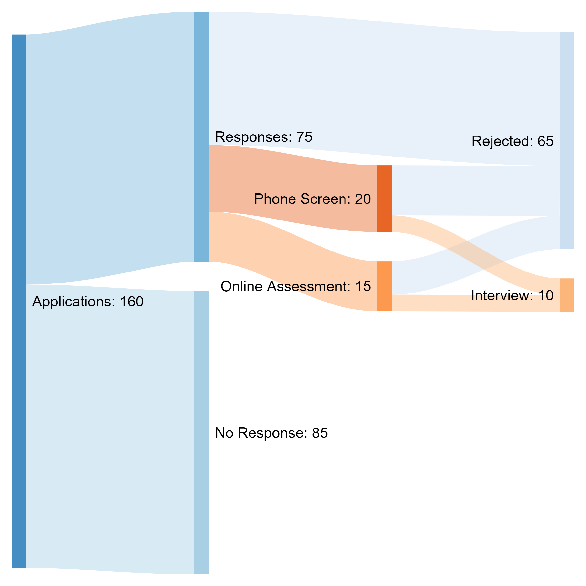

Data Visualization
-

-

-

- 
Hello, this is a quick piece I decide to make to show off how my job hunting has been going for me. These diagrams are based of my job hunting statistics and using matplotlib to create each diagram.
enjoy (:
With this chart we do not really have a great idea of what is going on. We notice that there is no keys, nothing to really note what is going on in this diagram. From it being a scatter plot we aren't really allowed to label heavily using matplotlib as a mapping function for scatter plots.
Using a bar chart we are able to better view what has occured with my job offers. With the first section 'apps', we can denote how many applications have been sent. Following from there we can getter a better idea of what overall occured with the application process from each section describing what has occured to application.
To get a better sense of what the data looks like and the grand scheme of what is occuring I thought a pie chart would allow for the easiest visualization and ledgibility of data that is presented. With this form of graphing the viewer is able to read the precentages of what has occured for each application. The only piece lacking for this form graph is that we do not see the amount versus seeing a precentage.
This is the last itteration of the graph and I believe to be the best representation of the data. Using this thread graph we are able to get a better understanding of how my application process has been working out. The use of space to show the sheer amount of a section along with written numbers allows us to get a full sense of how the application process has been going. While it doesn't exactly show you the precentage of each piece looking at the amount of threads that are attached to a section you can get a cursory idea of the precentage and if you wanted to dive further then you could do a simple x / y = z to figure out the exact precentage.
Thank you for taking a look at this little project. It was very fun to work on! (: